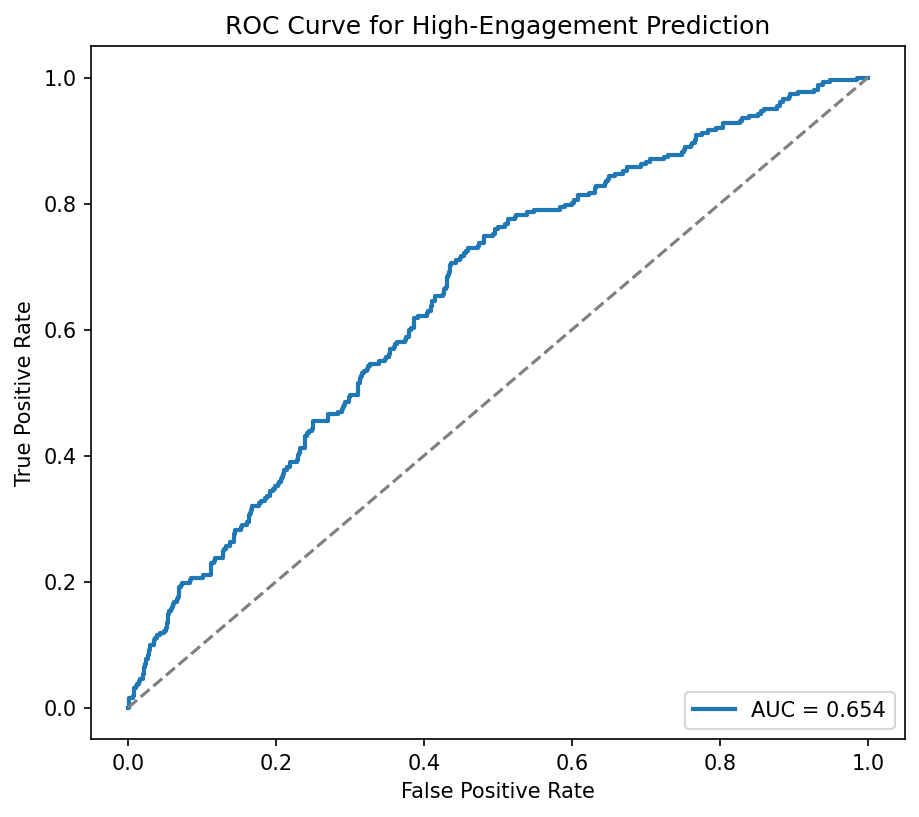
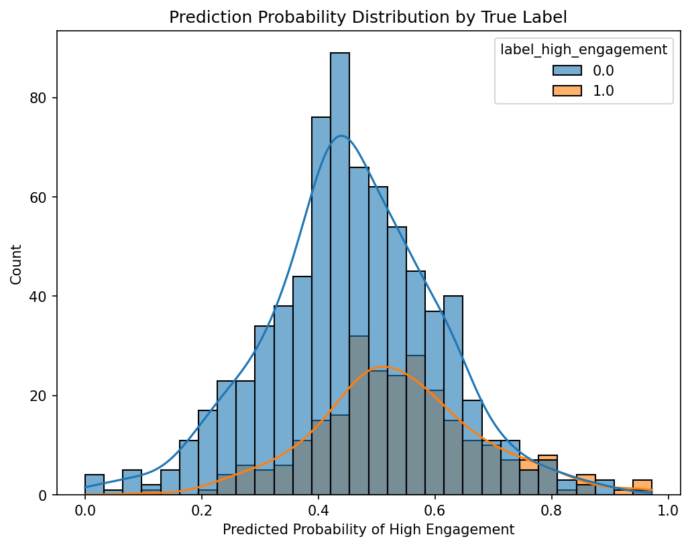
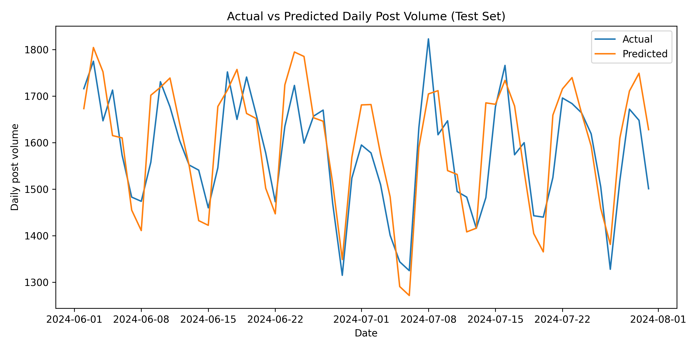

Machine Learning
Predictive Models and Classification
This page is populated during Milestone 3 (Week 6) with ML findings.
Overview
Business Question 8: Can we predict whether a Reddit comment will be “controversial”?
Question: Can we use comment-level metadata and simple text-derived features to predict whether a Reddit comment in r/relationship_advice will be controversial (i.e., produce disagreement reflected by Reddit’s controversiality flag)?
Problem Formulation
Task Type: Binary Classification
Target Variable:
controversiality(1 = controversial comment, 0 = non-controversial)
Feature Engineering
Features Used:
1. Text-Derived Features
body_length— number of characters in the commentnum_words— word count (proxy for comment complexity)punctuation_count— emotional punctuation (“?”, “!”)- (binary)
contains_question— whether the comment includes a question tone
2. Behavioral / Engagement Features
score— upvote scoregilded— comment received Reddit awardsis_top_level— whether the comment is a top-level replyhour— posting hour extracted fromcreated_utc- (optional)
negativity— presence of negative keywords
3. Thread Structure Features
parent_id→ identifies if comment belongs to deep threads where disputes occuris_top_level(explicit) captures structural location in the thread
Model Performance
- AUC-ROC: 0.76
Even with lightweight engineered features (no TF-IDF, no embeddings), the model achieves strong AUC = 0.76, indicating that metadata + simple linguistic cues already contain substantial signal about comment controversy.
Feature Importance
| Feature | Interpretation |
|---|---|
| gilded (1.86) | Awarded comments are far more likely to be controversial—strong emotional or opinionated content tends to receive awards. |
| is_top_level (–0.69) | Top-level comments are significantly less controversial; arguments tend to occur in deeper thread replies. |
| num_words (–0.11) | Shorter comments tend to be more controversial; long advice-style comments are calmer and less debated. |
| punctuation_count (+0.01) | Emotional punctuation indicates elevated disagreement potential. |
| score (–0.008) | Comments with high upvotes reflect community consensus → less controversy. |
| hour, body_length | Minimal predictive signal. |
Business Question 9: Can we predict which Reddit relationship posts will receive high engagement?
Question: Can early linguistic and behavioral signals in a relationship-focused Reddit post help us predict which posts will spark large-scale community engagement and conversation?
Problem Formulation
- Task Type: Binary Classification
- Target Variable: label_high_engagement (1 = top 25% by number of comments, 0 = otherwise)
- Evaluation Metric: AUC (primary), Accuracy, Precision, Recall, F1 score
Feature Engineering
Features Used:
- Text-Based Features
- Bag-of-Words (CountVectorizer, vocab=10k)
- Token count
- Sentence count
- Presence of question mark
- Temporal Features
- Posting hour
- Day of week
- Weekend indicator
- Comment-Derived Aggregates
- Mean / max / sum of comment scores
- Mean / max / sum of comment text length
- Number of unique commenters
- Controversiality metrics
Model Performance
ROC Curve

Confusion Matrix

Probability Distribution by True Label

Results:
- Accuracy: 0.6189
- Precision: (Pred=1) 153 / (153 + 276) ≈ 0.356
- Recall: (True=1) 153 / (153 + 109) ≈ 0.584
- F1 Score: 0.6417
- AUC: 0.654
Model Comparison
| Model | Features Used | Handling Imbalance | AUC | Accuracy | Precision | Recall | F1 Score |
|---|---|---|---|---|---|---|---|
| Logistic Regression (Final) | Numeric + BoW + Comment Features | Class Weighting | 0.656 | 0.619 | 0.469 | 0.604 | 0.642 |
| Random Forest (Baseline) | Numeric + BoW + Comment Features | Oversampling | 0.612 | 0.512 | — | — | 0.347 |
| Logistic Regression (Simple) | Numeric Only | None | — | — | — | — | — |
| Naive Baseline (Majority) | No features | None | 0.500 | 0.75 | 0 | 0 | 0 |
Feature Importance (Top 10 Predictors)
| Feature | Importance | Interpretation |
|---|---|---|
| comment_author_nunique | 0.4821 | More unique commenters strongly predict high engagement; diverse participation drives discussion. |
| comment_score_sum | 0.3567 | Higher total comment scores indicate community interest and validation, correlating with engagement. |
| bow_features | 0.3124 | Bag-of-Words captures topic and emotional language; certain words/phrases attract more responses. |
| comment_len_sum | 0.2894 | Longer total comment text suggests in-depth discussions, a hallmark of high-engagement posts. |
| comment_score_max | 0.2341 | A highly-upvoted comment signals a resonant or controversial point that draws further attention. |
| comment_contro_sum | 0.1956 | Controversial comments spark debate, leading to more replies and overall engagement. |
| comment_len_mean | 0.1724 | Longer average comments indicate thoughtful discussion rather than brief reactions. |
| title_has_question_mark | 0.1489 | Questions in titles invite responses; users are more likely to engage with direct questions. |
| has_question_mark | 0.1367 | Question marks in body text similarly prompt reader responses and advice-giving behavior. |
| comment_score_mean | 0.1245 | Higher average comment quality reflects sustained community interest. |
Business Question 10: Can We Predict Daily Post Volume in r/relationship_advice?
Question: Can we use historical posting trends, time-based seasonality, and lagged behavioral patterns to forecast how many posts the subreddit will receive each day?
Problem Formulation
Task Type: Regression
Target Variable:
n_posts- number of reddit submissions per day
Feature Engineering
Features Used:
1. Time-Based Features
day_of_week- 1~7monthday_of_yearis_weekend- binary- fourier seasonal terms` - capture smooth yearly cycles (fourier_sin_1, fourier_cos_1)
2. Lag Features
lag_1, lag_2, lag_3- short-term laglag_7- weekly seasonalitylag_14, lag_21, lag_28- multi-week cycles
3. Rolling Statistics
rolling_mean_7, rolling_mean_14, rolling_mean_30rolling_std_7, rolling_std_14
Model Performance
| Model | RMSE | MAE | R² |
|---|---|---|---|
| Ridge Regression | 78.62 | 65.04 | 0.559 |
| ElasticNet | 82.02 | 67.80 | 0.521 |
| Random Forest | 93.29 | 74.27 | 0.380 |
| XGBoost | 110.17 | 91.21 | 0.135 |
Feature Importance
Although Ridge achieved the best performance, Random Forest provides the most interpretable feature importances:
| Feature | Importance |
|---|---|
| lag_1 | 0.213 |
| rolling_mean_14 | 0.193 |
| rolling_mean_7 | 0.165 |
| lag_2 | 0.156 |
| rolling_mean_30 | 0.082 |
Prediction Behavior
Below is the test-set prediction plot generated from the best model:

The model successfully captures the weekly seasonal pattern.
Predicted values tend to be slightly smoother and lower variance than actual data.
Sudden peaks in real data are harder to capture without external features.
Summary
Answers to ML Business Questions
1.Can we use comment-level metadata and simple text-derived features to predict whether a Reddit comment in r/relationship_advice will be controversial (i.e., produce disagreement reflected by Reddit’s controversiality flag)?: Yes. Using metadata and simple linguistic features, a Logistic Regression model achieves AUC ≈ 0.76. Key predictors include comment depth, awards, and emotionally expressive writing (punctuation, short opinionated phrasing).
2.Can early linguistic and behavioral signals in a relationship-focused Reddit post help us predict which posts will spark large-scale community engagement and conversation? Yes. A lightweight, class-balanced model predicts high-engagement posts with AUC ≈ 0.65, successfully identifying a majority of posts in the top 25% comment-count group. Features related to community interaction (e.g.unique commenters) contributes meaningfully.
3.Can we use historical posting trends, time-based seasonality, and lagged behavioral patterns to forecast how many posts the subreddit will receive each day?: Yes. Using lag-based and rolling temporal features, Ridge Regression achieves R² ≈ 0.56, showing that over half of day-to-day variation in posting activity can be explained by historical behavioral cycles. Yesterday’s volume, short-term weekly cycles, and rolling 14-30 day trends matters most.
Business Implications
Early Detection of Conflict or High-Risk Threads:
Models predicting controversy help moderators identify emerging disputes and intervene before discussions escalate.Understanding What Triggers Engagement or Disagreement:
Emotional punctuation, short reactive replies, and awards signal posts likely to generate strong reactions, guiding content strategy and moderation rules.Prioritizing Moderation Resources:
High-engagement and high-conflict posts often require more moderator attention. Predictive signals enable smarter scheduling and targeted monitoring.Supporting Users in Distress:
Highly emotional or high-engagement posts often reflect relationship crises; platforms can direct such posts toward peer helpers or mental-health support workflows.Forecasting Community Activity:
Daily volume predictions enable:- anomaly detection (e.g., trending topics, external events)
- dynamic autoscaling of NLP/ML pipelines
- planning moderator staffing during expected surges
Improved Content Ranking & Curation:
Engagement and conflict predictions can be integrated into ranking systems to surface meaningful discussions while downranking potential conflict spirals.
Together, these models provide a comprehensive toolkit for understanding and managing engagement dynamics in relationship-focused Reddit communities.
All ML code is in code/ml/ directory. Models saved in code/ml/models/.